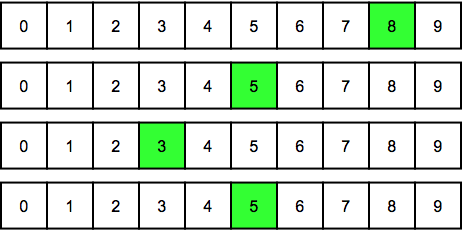

Solution
Il faut essayer les 3 codes montrés ci-dessous.
| 8553 |
8535 |
8355 |
 |
 |
 |
En effet, pour placer deux fois le chiffre 5 et une fois le chiffre 3, il y a trois possibilités, selon l'endroit où l'on place le chiffre 3.
Il y a 6 codes possibles : 8551, 8552, 8515, 8525, 8155, 8255.
Pour trouver ces codes, on commence par placer le chiffre 8. Ensuite, on choisit l'endroit où l'on ne va pas mettre de chiffre 5. Il y a trois endroits possibles pour cela. A chacun de ces endroits, on peut mettre soit un 1, soit un 2.
Il y a 6 codes possibles : 3355, 3553, 3535, 5335, 5353, 5533 .
Pour trouver ces codes, on peut considérer deux cas possibles.
- Soit le code commence par un 3. Dans ce cas, il reste un chiffre 3 et deux chiffres 5 à placer. Il y a trois cas possibles, selon où l'on place le chiffre 3.
- Soit le code commence par un 5. Dans ce cas, il reste un chiffre 5 et deux chiffres 3 à placer. Il y a trois cas possibles, selon où l'on place le chiffre 5.
Pour essayer tous les codes en un nombre minimum de clics, il faut les prendre dans un certain ordre, de sorte à passer d'un code au suivant en ne faisant que 2 modifications.
On effectue alors 4 clics pour le premier code, puis 2 clics pour chaque code suivant, soit 14 clics au total.
C'est de l'informatique !
Pour trouver un mot de passe, une approche qui marche à tous les coups, c'est d'essayer toutes les possibilités ! Cependant, cette approche peut prendre un temps considérable.
Lorsqu'on a des informations supplémentaires sur la manière dont le mot de passe à été construit, on peut gagner beaucoup de temps en n'essayant que les possibilités qui ont une chance de marcher.
Pour cela, il faut être capable d'énumérer efficacement les possibilités qui satisfont certaines contraintes. C'est exactement ce que l'on demandait dans ce sujet.